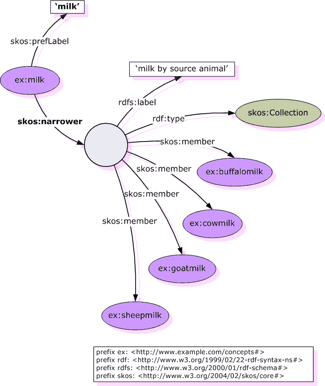
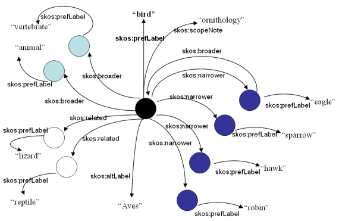

Simple Knowledge Object Sharing (SKOS)¶
The SKOS graph is depicted in this OWL-generated illustration.
An example of applying SKOS :cite:`6050` :cite:`4007` to identifying milk is depicted in this illustration:

An example of applying SKOS to identifying animals is depicted in this illustration:
